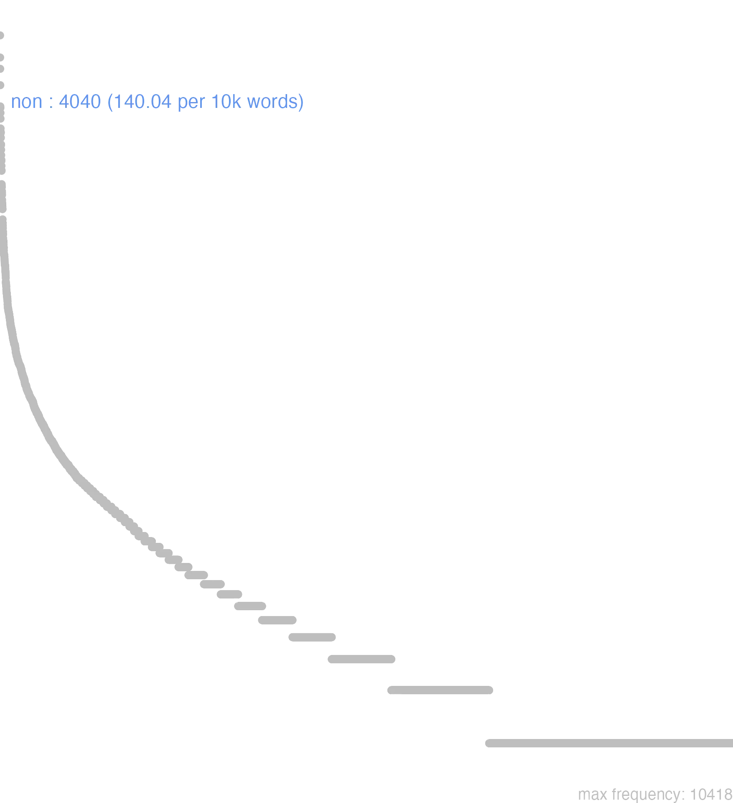

113 non
113.0.0.1 bases lexicais
id: http://lila-erc.eu/data/id/lemma/114108
classe: advérbio
paradigma: indeclinável
outras grafias:
variantes do lema:
no data
nōn
no data
113.0.0.2 dicionários tradicionais
nōn
adv. de negação
Obs.: Notem-se as expressões: a non ita, non tam Cíc. Verr. 4, 109 “não assim exatamente”; b non tam… quam Cíc. C. M. 27 “não tanto quanto, i. e., menos … que”; c non fere quisquam Cíc. Verr. 5. 182 “quase ninguém”. Non é por excelência a negação do indicativo e da oração principal. Seu uso nas proibições não é permitido pela prosa clássica, mas frequente em poesia.
adv. de negação
Obs.: Notem-se as expressões: a non ita, non tam Cíc. Verr. 4, 109 “não assim exatamente”; b non tam… quam Cíc. C. M. 27 “não tanto quanto, i. e., menos … que”; c non fere quisquam Cíc. Verr. 5. 182 “quase ninguém”. Non é por excelência a negação do indicativo e da oração principal. Seu uso nas proibições não é permitido pela prosa clássica, mas frequente em poesia.
1 Não colocado antes do verbo.
2 Aparece junto do nome quando a ele se refere:
3 Não é verdade que, longe de Cíc. Oro 51.
4 Ou melhor = non dico Cíc. Phil. 5, 24.
5 Por acaso não quando a interrogação está no tom da frase, equivalendo nonne:
[EXEMPLOS]
2
* non curia vires meas desiderat C íc. C. M. 32 “não é a cúria que lastima o desaparecimento de minhas forças”.
5
non semper otio studui? Cíc. Phil. 8, 11 “por acaso não procurei sempre o repouso?”.
no data
Non
adv.
adv.
1 Cic. não.
Non
1 naõ
[EXEMPLOS]
X
nonnihilo em alguma cousa
Non
aduerb. negandi.
aduerb. negandi.
1 nam
113.0.0.3 dados de corpus
![This chart plots collocate by scoreSUBST, for the headword non here are all the values plotted: collocate: possum; scoreSUBST: 0. collocate: modo; scoreSUBST: 0. collocate: sum; scoreSUBST: 0. collocate: solum; scoreSUBST: 0. collocate: enim; scoreSUBST: 0. collocate: ut; scoreSUBST: 0. collocate: uideo; scoreSUBST: 0. collocate: habeo; scoreSUBST: 0. collocate: dico; scoreSUBST: 0. collocate: dubito; scoreSUBST: 0. collocate: facio; scoreSUBST: 0. collocate: tam; scoreSUBST: 0. collocate: fero; scoreSUBST: 0. collocate: quia; scoreSUBST: 0. collocate: tantum; scoreSUBST: 0. collocate: licet; scoreSUBST: 0. collocate: puto; scoreSUBST: 0. collocate: uenio; scoreSUBST: 0. collocate: audeo; scoreSUBST: 0. collocate: intellego; scoreSUBST: 0. collocate: parum; scoreSUBST: 0. collocate: nonnullus; scoreSUBST: 0. collocate: debeo; scoreSUBST: 0. collocate: sine; scoreSUBST: 0. collocate: timeo; scoreSUBST: 0. collocate: paruus; scoreSUBST: 0. collocate: desum; scoreSUBST: 0. collocate: fio; scoreSUBST: 0. collocate: audio; scoreSUBST: 0. collocate: patior; scoreSUBST: 0. collocate: ample; scoreSUBST: 0. collocate: queo; scoreSUBST: 0. collocate: sino; scoreSUBST: 0. collocate: committo; scoreSUBST: 0. collocate: egeo; scoreSUBST: 0. collocate: aliter; scoreSUBST: 0. collocate: probo; scoreSUBST: 0. collocate: reddo; scoreSUBST: 0. collocate: longe; scoreSUBST: 0. collocate: secus; scoreSUBST: 0. collocate: fastidio; scoreSUBST: 0. collocate: libet; scoreSUBST: 0. collocate: acerbitas; scoreSUBST: 2. collocate: desisto; scoreSUBST: 0. collocate: extimesco; scoreSUBST: 0. collocate: effugio; scoreSUBST: 0. collocate: ignoro; scoreSUBST: 0. collocate: exprimo; scoreSUBST: 0. collocate: aeque; scoreSUBST: 0. collocate: lenis; scoreSUBST: 0. collocate: ligneolus; scoreSUBST: 0. collocate: recuso; scoreSUBST: 0. collocate: mehercule; scoreSUBST: 0. collocate: mediocris; scoreSUBST: 0](./Media/wordcloud__xx110-111-110xx__BY_collocate_scoreSUBST.webp)
![This chart plots collocate by scoreADJ, for the headword non here are all the values plotted: collocate: possum; scoreADJ: 0. collocate: modo; scoreADJ: 0. collocate: sum; scoreADJ: 0. collocate: solum; scoreADJ: 0. collocate: enim; scoreADJ: 0. collocate: ut; scoreADJ: 0. collocate: uideo; scoreADJ: 0. collocate: habeo; scoreADJ: 0. collocate: dico; scoreADJ: 0. collocate: dubito; scoreADJ: 0. collocate: facio; scoreADJ: 0. collocate: tam; scoreADJ: 0. collocate: fero; scoreADJ: 0. collocate: quia; scoreADJ: 0. collocate: tantum; scoreADJ: 0. collocate: licet; scoreADJ: 0. collocate: puto; scoreADJ: 0. collocate: uenio; scoreADJ: 0. collocate: audeo; scoreADJ: 0. collocate: intellego; scoreADJ: 0. collocate: parum; scoreADJ: 0. collocate: nonnullus; scoreADJ: 0. collocate: debeo; scoreADJ: 0. collocate: sine; scoreADJ: 0. collocate: timeo; scoreADJ: 0. collocate: paruus; scoreADJ: 2. collocate: desum; scoreADJ: 0. collocate: fio; scoreADJ: 0. collocate: audio; scoreADJ: 0. collocate: patior; scoreADJ: 0. collocate: ample; scoreADJ: 0. collocate: queo; scoreADJ: 0. collocate: sino; scoreADJ: 0. collocate: committo; scoreADJ: 0. collocate: egeo; scoreADJ: 0. collocate: aliter; scoreADJ: 0. collocate: probo; scoreADJ: 0. collocate: reddo; scoreADJ: 0. collocate: longe; scoreADJ: 0. collocate: secus; scoreADJ: 0. collocate: fastidio; scoreADJ: 0. collocate: libet; scoreADJ: 0. collocate: acerbitas; scoreADJ: 0. collocate: desisto; scoreADJ: 0. collocate: extimesco; scoreADJ: 0. collocate: effugio; scoreADJ: 0. collocate: ignoro; scoreADJ: 0. collocate: exprimo; scoreADJ: 0. collocate: aeque; scoreADJ: 0. collocate: lenis; scoreADJ: 2. collocate: ligneolus; scoreADJ: 2. collocate: recuso; scoreADJ: 0. collocate: mehercule; scoreADJ: 0. collocate: mediocris; scoreADJ: 2](./Media/wordcloud__xx110-111-110xx__BY_collocate_scoreADJ.webp)
![This chart plots collocate by scoreVERBO, for the headword non here are all the values plotted: collocate: possum; scoreVERBO: 5. collocate: modo; scoreVERBO: 0. collocate: sum; scoreVERBO: 4. collocate: solum; scoreVERBO: 0. collocate: enim; scoreVERBO: 0. collocate: ut; scoreVERBO: 0. collocate: uideo; scoreVERBO: 2. collocate: habeo; scoreVERBO: 2. collocate: dico; scoreVERBO: 2. collocate: dubito; scoreVERBO: 4. collocate: facio; scoreVERBO: 2. collocate: tam; scoreVERBO: 0. collocate: fero; scoreVERBO: 2. collocate: quia; scoreVERBO: 0. collocate: tantum; scoreVERBO: 0. collocate: licet; scoreVERBO: 3. collocate: puto; scoreVERBO: 2. collocate: uenio; scoreVERBO: 2. collocate: audeo; scoreVERBO: 3. collocate: intellego; scoreVERBO: 2. collocate: parum; scoreVERBO: 0. collocate: nonnullus; scoreVERBO: 0. collocate: debeo; scoreVERBO: 2. collocate: sine; scoreVERBO: 0. collocate: timeo; scoreVERBO: 2. collocate: paruus; scoreVERBO: 0. collocate: desum; scoreVERBO: 2. collocate: fio; scoreVERBO: 2. collocate: audio; scoreVERBO: 1. collocate: patior; scoreVERBO: 2. collocate: ample; scoreVERBO: 0. collocate: queo; scoreVERBO: 2. collocate: sino; scoreVERBO: 2. collocate: committo; scoreVERBO: 2. collocate: egeo; scoreVERBO: 2. collocate: aliter; scoreVERBO: 0. collocate: probo; scoreVERBO: 2. collocate: reddo; scoreVERBO: 2. collocate: longe; scoreVERBO: 0. collocate: secus; scoreVERBO: 0. collocate: fastidio; scoreVERBO: 2. collocate: libet; scoreVERBO: 2. collocate: acerbitas; scoreVERBO: 0. collocate: desisto; scoreVERBO: 2. collocate: extimesco; scoreVERBO: 2. collocate: effugio; scoreVERBO: 2. collocate: ignoro; scoreVERBO: 2. collocate: exprimo; scoreVERBO: 2. collocate: aeque; scoreVERBO: 0. collocate: lenis; scoreVERBO: 0. collocate: ligneolus; scoreVERBO: 0. collocate: recuso; scoreVERBO: 2. collocate: mehercule; scoreVERBO: 0. collocate: mediocris; scoreVERBO: 0](./Media/wordcloud__xx110-111-110xx__BY_collocate_scoreVERBO.webp)
![This chart plots collocate by scoreADV, for the headword non here are all the values plotted: collocate: possum; scoreADV: 0. collocate: modo; scoreADV: 5. collocate: sum; scoreADV: 0. collocate: solum; scoreADV: 5. collocate: enim; scoreADV: 3. collocate: ut; scoreADV: 0. collocate: uideo; scoreADV: 0. collocate: habeo; scoreADV: 0. collocate: dico; scoreADV: 0. collocate: dubito; scoreADV: 0. collocate: facio; scoreADV: 0. collocate: tam; scoreADV: 2. collocate: fero; scoreADV: 0. collocate: quia; scoreADV: 0. collocate: tantum; scoreADV: 3. collocate: licet; scoreADV: 0. collocate: puto; scoreADV: 0. collocate: uenio; scoreADV: 0. collocate: audeo; scoreADV: 0. collocate: intellego; scoreADV: 0. collocate: parum; scoreADV: 2. collocate: nonnullus; scoreADV: 0. collocate: debeo; scoreADV: 0. collocate: sine; scoreADV: 0. collocate: timeo; scoreADV: 0. collocate: paruus; scoreADV: 0. collocate: desum; scoreADV: 0. collocate: fio; scoreADV: 0. collocate: audio; scoreADV: 0. collocate: patior; scoreADV: 0. collocate: ample; scoreADV: 2. collocate: queo; scoreADV: 0. collocate: sino; scoreADV: 0. collocate: committo; scoreADV: 0. collocate: egeo; scoreADV: 0. collocate: aliter; scoreADV: 2. collocate: probo; scoreADV: 0. collocate: reddo; scoreADV: 0. collocate: longe; scoreADV: 2. collocate: secus; scoreADV: 2. collocate: fastidio; scoreADV: 0. collocate: libet; scoreADV: 0. collocate: acerbitas; scoreADV: 0. collocate: desisto; scoreADV: 0. collocate: extimesco; scoreADV: 0. collocate: effugio; scoreADV: 0. collocate: ignoro; scoreADV: 0. collocate: exprimo; scoreADV: 0. collocate: aeque; scoreADV: 2. collocate: lenis; scoreADV: 0. collocate: ligneolus; scoreADV: 0. collocate: recuso; scoreADV: 0. collocate: mehercule; scoreADV: 0. collocate: mediocris; scoreADV: 0](./Media/wordcloud__xx110-111-110xx__BY_collocate_scoreADV.webp)
![This chart plots collocate by scoreFUNC, for the headword non here are all the values plotted: collocate: possum; scoreFUNC: 0. collocate: modo; scoreFUNC: 0. collocate: sum; scoreFUNC: 0. collocate: solum; scoreFUNC: 0. collocate: enim; scoreFUNC: 0. collocate: ut; scoreFUNC: 20. collocate: uideo; scoreFUNC: 0. collocate: habeo; scoreFUNC: 0. collocate: dico; scoreFUNC: 0. collocate: dubito; scoreFUNC: 0. collocate: facio; scoreFUNC: 0. collocate: tam; scoreFUNC: 0. collocate: fero; scoreFUNC: 0. collocate: quia; scoreFUNC: 30. collocate: tantum; scoreFUNC: 0. collocate: licet; scoreFUNC: 0. collocate: puto; scoreFUNC: 0. collocate: uenio; scoreFUNC: 0. collocate: audeo; scoreFUNC: 0. collocate: intellego; scoreFUNC: 0. collocate: parum; scoreFUNC: 0. collocate: nonnullus; scoreFUNC: 0. collocate: debeo; scoreFUNC: 0. collocate: sine; scoreFUNC: 20. collocate: timeo; scoreFUNC: 0. collocate: paruus; scoreFUNC: 0. collocate: desum; scoreFUNC: 0. collocate: fio; scoreFUNC: 0. collocate: audio; scoreFUNC: 0. collocate: patior; scoreFUNC: 0. collocate: ample; scoreFUNC: 0. collocate: queo; scoreFUNC: 0. collocate: sino; scoreFUNC: 0. collocate: committo; scoreFUNC: 0. collocate: egeo; scoreFUNC: 0. collocate: aliter; scoreFUNC: 0. collocate: probo; scoreFUNC: 0. collocate: reddo; scoreFUNC: 0. collocate: longe; scoreFUNC: 0. collocate: secus; scoreFUNC: 0. collocate: fastidio; scoreFUNC: 0. collocate: libet; scoreFUNC: 0. collocate: acerbitas; scoreFUNC: 0. collocate: desisto; scoreFUNC: 0. collocate: extimesco; scoreFUNC: 0. collocate: effugio; scoreFUNC: 0. collocate: ignoro; scoreFUNC: 0. collocate: exprimo; scoreFUNC: 0. collocate: aeque; scoreFUNC: 0. collocate: lenis; scoreFUNC: 0. collocate: ligneolus; scoreFUNC: 0. collocate: recuso; scoreFUNC: 0. collocate: mehercule; scoreFUNC: 0. collocate: mediocris; scoreFUNC: 0](./Media/wordcloud__xx110-111-110xx__BY_collocate_scoreFUNC.webp)
![This charts plots the frequency of lemma by author_Frequencies. The Seneca subcorpus registers the highest normalized frequency, with the value of 182.15 and an absolute frequency of 976. The Cicero subcorpus follows, with a normalized frequency of 157.36 and an absolute frequency of 2526. the subcorpus with the least normalized frequency is Vergilius with the normalized value of 32.82 and an absolute freqeuncy of 17. here are all the values: subcorpus: Caesar ; normalized frequency: 198 ; absolute frequency: 74.7790618626784. subcorpus: Cicero ; normalized frequency: 2526 ; absolute frequency: 157.359647155566. subcorpus: Horatius ; normalized frequency: 115 ; absolute frequency: 102.122369238966. subcorpus: Ovidius ; normalized frequency: 32 ; absolute frequency: 54.9073438572409. subcorpus: Phaedrus ; normalized frequency: 52 ; absolute frequency: 78.9433733110672. subcorpus: Sallustius ; normalized frequency: 43 ; absolute frequency: 39.8849828401818. subcorpus: Seneca ; normalized frequency: 976 ; absolute frequency: 182.154121796906. subcorpus: Suetonius ; normalized frequency: 3 ; absolute frequency: 33.0760749724366. subcorpus: Tacitus ; normalized frequency: 27 ; absolute frequency: 92.6879505664264. subcorpus: Vergilius ; normalized frequency: 17 ; absolute frequency: 32.8185328185328. subcorpus: Hieronymus ; normalized frequency: 51 ; absolute frequency: 114.580993035273](./Media/barchart__xx110-111-110xx__lemma_BY_author_Frequencies.webp)
![This charts plots the frequency of lemma by genre_Frequencies. The Prosa.filosófica subcorpus registers the highest normalized frequency, with the value of 187.97 and an absolute frequency of 1141. The Prosa.filosófica subcorpus follows, with a normalized frequency of 187.97 and an absolute frequency of 1141. the subcorpus with the least normalized frequency is Poesia.épica with the normalized value of 32.82 and an absolute freqeuncy of 17. here are all the values: subcorpus: Prosa.histórica ; normalized frequency: 271 ; absolute frequency: 65.9704471871272. subcorpus: Prosa.filosófica ; normalized frequency: 1141 ; absolute frequency: 187.970544142601. subcorpus: Prosa.oratória ; normalized frequency: 1722 ; absolute frequency: 165.333691780362. subcorpus: Prosa.epistolográfica ; normalized frequency: 532 ; absolute frequency: 140.968229152866. subcorpus: Poesia.lírica ; normalized frequency: 116 ; absolute frequency: 97.585597711786. subcorpus: Poesia.didática ; normalized frequency: 83 ; absolute frequency: 70.4046144711171. subcorpus: Poesia.trágica ; normalized frequency: 107 ; absolute frequency: 92.9464906184851. subcorpus: Poesia.épica ; normalized frequency: 17 ; absolute frequency: 32.8185328185328. subcorpus: Prosa.ficcional ; normalized frequency: 51 ; absolute frequency: 114.580993035273](./Media/barchart__xx110-111-110xx__lemma_BY_genre_Frequencies.webp)
![This charts plots the frequency of lemma by period_Frequencies. The I.d.C. subcorpus registers the highest normalized frequency, with the value of 162 and an absolute frequency of 1059. The I.a.C. subcorpus follows, with a normalized frequency of 134.98 and an absolute frequency of 2900. the subcorpus with the least normalized frequency is II.d.C. with the normalized value of 78.53 and an absolute freqeuncy of 30. here are all the values: subcorpus: I.a.C. ; normalized frequency: 2900 ; absolute frequency: 134.977891552246. subcorpus: I.d.C. ; normalized frequency: 1059 ; absolute frequency: 162.000917852226. subcorpus: II.d.C. ; normalized frequency: 30 ; absolute frequency: 78.5340314136126. subcorpus: IV.d.C. ; normalized frequency: 51 ; absolute frequency: 114.580993035273](./Media/barchart__xx110-111-110xx__lemma_BY_period_Frequencies.webp)
non lubet fugere
Cic.Att.2.18.3
Não tenho vontade de fugir. [JDD, de outra edição]
non dubitat facere
Cic.Att.4.3.5
Não duvida em fazê-lo. [JDD]
non dubitant iurare ceteri
Cic.Att.2.18.2
Todos os demais não hesitam em jurar. [JDD]
non probabunt nisi agnouerint
Sen.Ep.29.11
não te aprovarão se não te reconhecerem. [JDD]
ille uero non patitur
Sen.Prov.6.1
Ele, na verdade, não consente. [JDD]
an non est professus
Cic.Arch.9
Será que ele não se registrou? [JDD]
fructum domesticum non habent
Cic.Att.1.18.1
não têm utilidade para minha vida doméstica. [JDD]
animum debes mutare non caelum
Sen.Ep.28.1
Deves mudar o espírito, não o clima. [JDD]
si non dixit cur dedit
Cic.Cael.52
Se não disse, por que ela deu? [JDD]
quam multa non expectata uenerunt
Sen.Ep.13.10
Quantos não esperados vieram! [JDD]
non mortem timemus sed cogitationem mortis
Sen.Ep.30.17
Não tememos a morte, mas o pensamento da morte. [JDD]
nam Phaetho libertus eum non vidit
Cic.Att.3.8.2
De fato, o liberto Fetão não o viu. [JDD]
non minimum quod soror praegnas est
Cic.Att.1.10.5
e não é o menor o fato de tua irmã estar grávida. [JDD, de outra edição]
lege enim collegi sui non tenebantur
Cic.Att.3.23.4
pois eles não estavam submetidos a uma lei de seu colégio. [JDD]
sed ille ut scripsi non miser
Cic.Att.4.6.2
Mas ele, como escrevi, não é infeliz. [JDD]
eum quia non videbam abesse putabam
Cic.Att.4.8A.3
Eu, porque não o via, achava que ele estava ausente. [JDD]
non enim veni vocare iustos sed peccatores
Vulg.Marc.2.17
pois eu não vim chamar os justos, mas os pecadores. [JDD]
ubi dominus odit fit nocens non quaeritur
Sen.Ag.280
Quando o amo odeia alguém, este se torna culpado; não se investiga. [JDD]
infirmi animi est pati non posse diuitias
Sen.Ep.5.6
é próprio de um espírito fraco não poder suportar a riqueza. [JDD]
bonos inimicos habet improbos ipsos non amicos
Cic.Att.2.21.3
Tem os homens de bem como inimigos, os próprios ímprobos não tem como amigos. [JDD]
laborem si non recuses parum est posce
Sen.Ep.31.6
É pouco, se não recusas o trabalho; busca-o. [JDD]
primum quaeritur an intellegat non quemadmodum intellegat
Sen.Ep.121.19
Em primeiro lugar se quer saber se ele entende, não como ele entende. [JDD]
itaque oratio iuventuti nostrae deberi non potest
Cic.Att.4.2.2
E assim o discurso não pode deixar a dever à nossa juventude. [JDD]
mirum illi uideri mittit iterum non redditur
Cic.Ver.2.4.66.3
A ele lhe parecia estranho; envia novamente; não é devolvido. [JDD]
hunc iudicem ex kalendis Ianuariis non habebimus
Cic.Ver.1.29
Esse juiz não o teremos a partir das calendas de janeiro [1º. de janeiro]. [JDD]
non enim dicentur tantum illa sed probabuntur
Sen.Ep.20.9
pois aquelas coisas não só serão ditas, mas serão provadas.” [JDD]
non licet diuitias in sinu positas contemnere
Sen.Ep.20.10
Não é lícito desprezar as riquezas postas em seu poder? [JDD]
sed de re publica non libet plura scribere
Cic.Att.2.18.3
Mas não tenho mais vontade de escrever sobre a república. [JDD]
et puto si uenalis esset non haberet emptorem
Sen.Ep.27.8
e acho, se fosse vendável, não teria comprador. [JDD]
non potest artifex mutare materiam hoc passa est
Sen.Prov.5.9
O artesão não pode mudar a matéria. Esta é a condição. [JDD, de outra edição]
hoc feci dum licuit intermisi quoad non licuit
Cic.Phil.3.33.10
Isso fiz, sempre que me foi permitido; deixei de fazer, enquanto não me foi permitido. [JDD]
cum a proximis impetrare non possent ulteriores temptant
Caes.Gal.6.2.2
Como não pudessem consegui-lo dos mais próximos, tentam os mais afastados. [JDD]
non sine magno quidem rei publicae prouinciaeque Siciliae detrimento
Cic.Ver.2.4.20.7
Na verdade, não sem um grande dano à república e à província da Sicília. [JDD]
non potest fieri ut non aliquando succedat multa temptanti
Sen.Ep.29.2
não pode ocorrer que não tenha êxito algumas vezes quem tenta muitas coisas.” [JDD]
prouinciae praefuit non minore iustitia quam fortitudine ; praefuit
Suet.Aug.2.3.2
Governou a província com não menor justiça do que valor. [JDD]
multa quam superuacua essent non intelleximus nisi deesse coeperunt
Sen.Ep.123.6
Não entendemos quão supérfluas eram muitas coisas, a não ser quando começaram a faltar. [JDD]
utebamur enim illis non quia debebamus sed quia habebamus
Sen.Ep.123.6
pois as usávamos não porque devíamos, mas porque as tínhamos. [JDD]
Graecis querentibus ut in fano deponerent postulantibus non concessi
Cic.Att.5.21.12
aos gregos que se queixavam, postulando para depositar o dinheiro no templo, eu não concedi. [JDD]
palus erat non magna inter nostrum atque hostium exercitum
Caes.Gal.2.9.1
Havia entre o nosso exército e o dos inimigos um charco não grande. [JDD]
vereor enim ne dum defendam meos non parcam tuis
Cic.Att.1.17.3
pois receio que, defendendo os meus, eu não poupe os teus. [JDD]
cognoscite Quirites non enim hoc sine causa quaeri uidetur
Cic.Man.22
Ficai sabendo, Quirites; pois isso não parece ser perguntado sem motivo. [JDD]
Sallustium praesentem restituere in eius veterem gratiam non potui
Cic.Att.1.3.3
Não consegui devolver Salústio, que está aqui, à sua velha amizade. [JDD]
illi finitimos Germanos sollicitare et pecuniam polliceri non desistunt
Caes.Gal.6.2.1
Eles não desistem de incitar os vizinhos germanos e de prometer-lhes dinheiro. [JDD]
non tantum praesentis sed uigilantis est occasionem obseruare properantem
Sen.Ep.22.3
É próprio não somente de quem está presente, mas de quem está atento observar a ocasião que passa apressada. [JDD]
non minus incerta in re publica quam in epistula tua
Cic.Att.2.15.1
que a situação não é menos incerta na república do em tua carta. [JDD]
quaedam incremento non tantum in maius exeunt sed in aliud
Sen.Ep.118.14
Certas coisas, com o crescimento, não só se tornam maiores, mas também outras. [JDD]
atque his irascebamur hos requirebamus his non nulli etiam minabantur
Cic.Lig.33
E estávamos irritados com eles, os procurávamos, alguns até mesmo os ameaçavam. [JDD]
intus omne posui bonum non egere felicitate felicitas uestra est
Sen.Prov.6.5
Pus dentro todo o bem; não necessitar da felicidade é a vossa felicidade. [JDD]
incredibile dicam sed ita clarum ut ipsum negaturum non arbitrer
Cic.Ver.2.4.57.14
Vou dizer algo incrível, mas tão evidente que eu creio que nem ele próprio vai negar. [JDD]
ille autem non simulat sed plane tribunus plebis fieri cupit
Cic.Att.2.1.5
Já aquele não disfarça, mas revela abertamente o desejo de se tornar tribuno da plebe. [JDD, de outra edição]
113.0.0.4 Diagrama de Zipf
